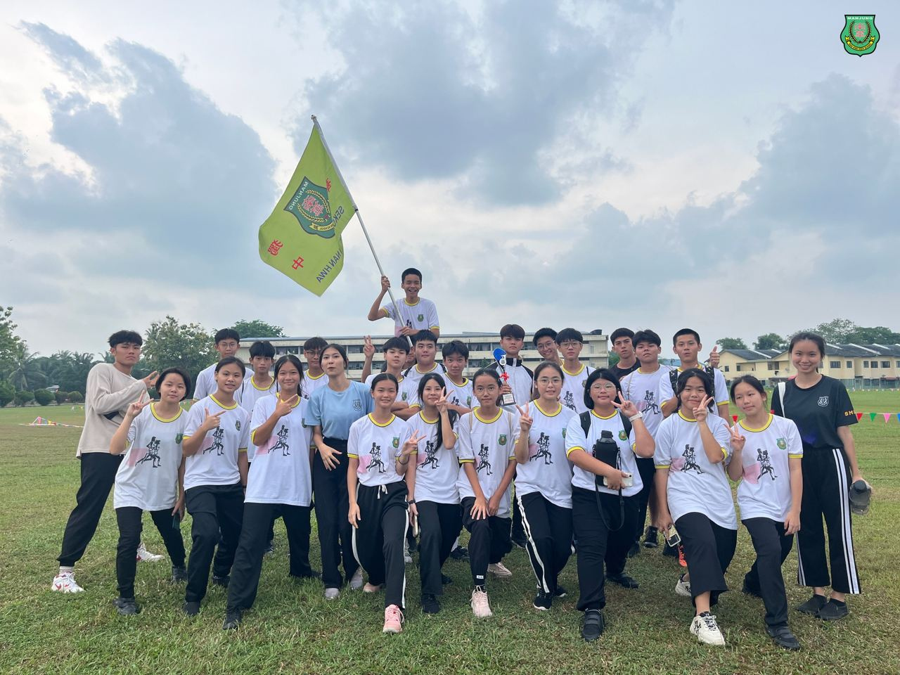
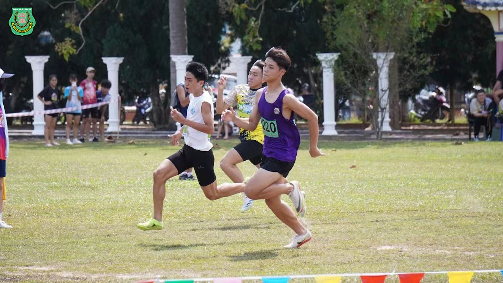
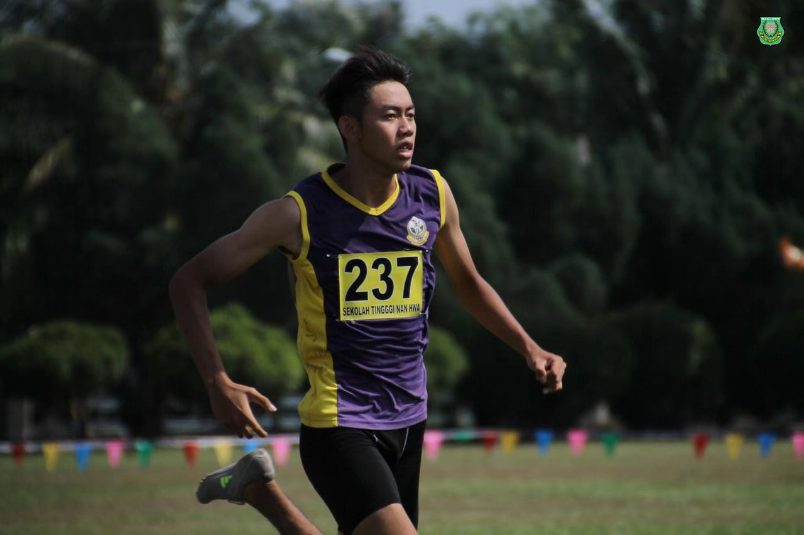
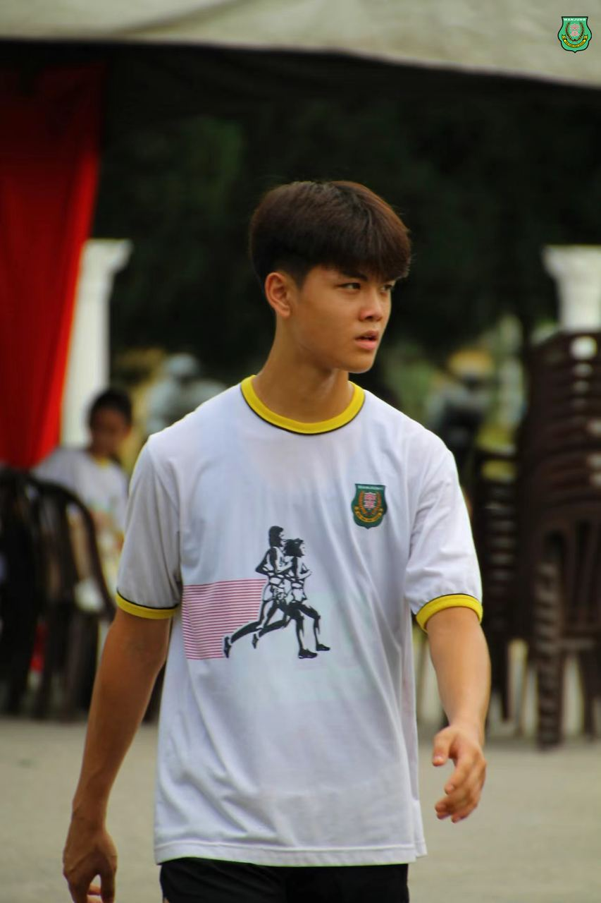
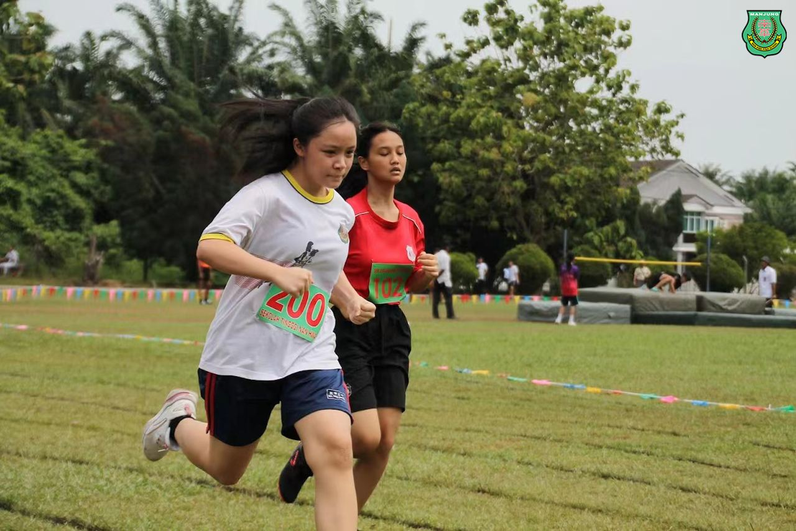
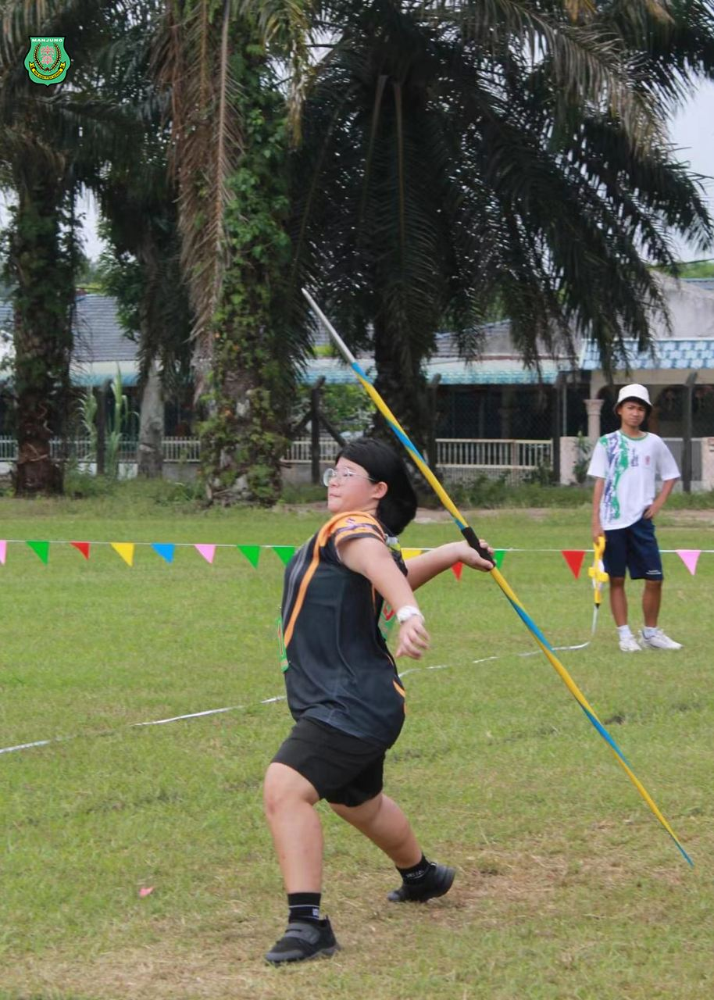
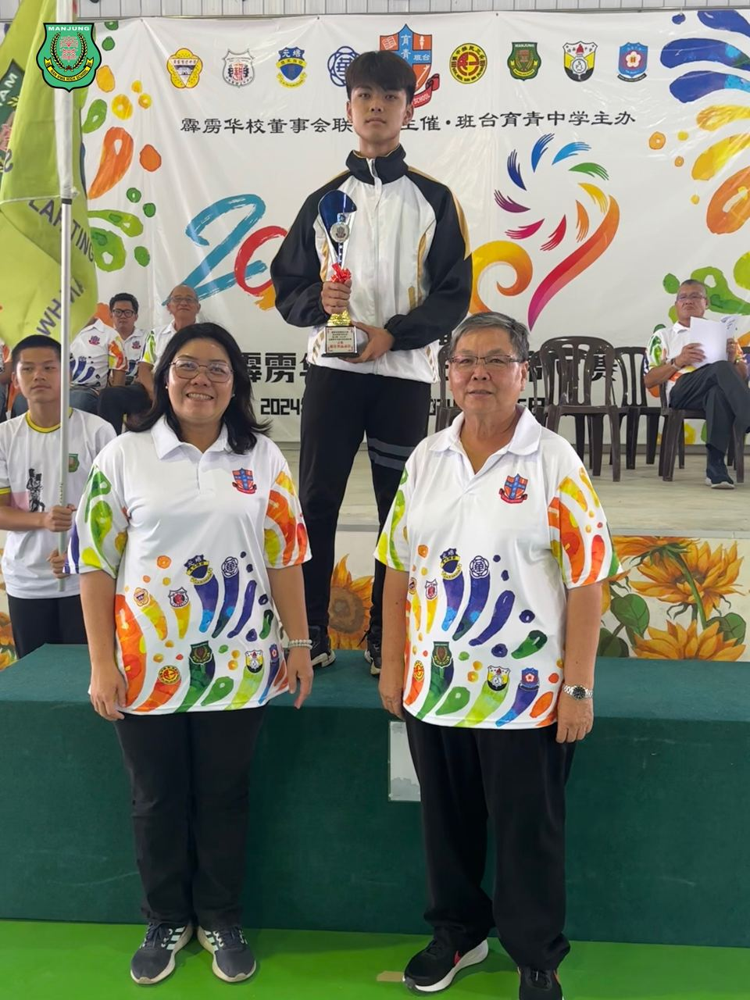
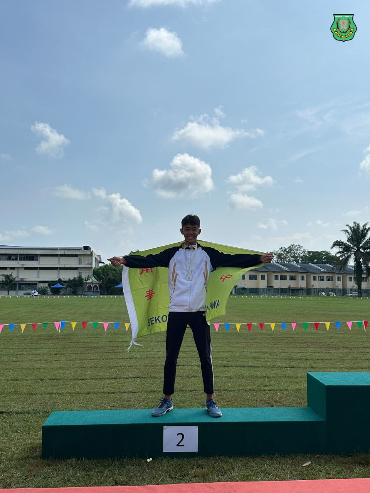

南华独中田径赛事告捷
南华独中田径赛事告捷
学生张梓乐连破三项赛会记录
荣获男子乙组最佳男运动员殊荣
也是全场表现最佳运动员
本校学生于第19届九独中田径锦标赛上勇夺佳绩，其中张梓乐同学更是脱颖而出，荣获男子乙组最佳男运动员殊荣，成为唯一一位在比赛中连续破三项个人项目纪录的选手！
在比赛中，张梓乐同学展现了出色的竞技实力，连续夺得100米、200米和400米的冠军，并分别打破了原有的赛会记录。他的成绩分别是100米冠军（11.72秒，原纪录12.1秒）、200米冠军（24.26秒，原纪录24.7秒）以及400米冠军（57.70秒，原纪录58.7秒）。
此外，南华独中还有其他学生表现出色。陈广臣同学在男乙三级跳项目中荣获季军，而苏雅杰同学则在男甲跳远项目中斩获亚军。
南华独中校长陈丽冰博士对学生们的出色表现表示赞赏和鼓励，“心有多大，舞台就有多大”“学生们杰出表现令人鼓舞，并坚信学生们不会止步于目前的成就，而是朝着登上更高的舞台上展现才华而奋斗。陈校长表示，天道酬勤，学生摘下成功的果实都是辛勤努力付出后的必然结果。
带队老师颜国政也对学生们的杰出表现而感到光荣，并指出学生在训练期间展现出积极向上的体育精神，尤其是张梓乐同学在放假时自愿进行特别训练，带动了南华学子们的运动风气，展现出运动员所具备的学习态度和努力精神。颜老师也鼓励学生们应通过比赛了解自身不足，刻苦学习，加倍付出，为日后的成功作好完全准备。
张梓乐同学在接受采访时表示，虽然比赛中感受到了前所未有的压力，但能够获得冠军并打破纪录让他感到非常惊喜和欣慰。张同学表示虽然训练辛苦，但这些荣誉让他觉得一切都是值得的。他表示感谢教练的辛勤付出，同时也对家人的全力支持表示知足与感动，并表示将继续努力训练，为即将到来的全国独中田径锦标赛做好准备，希望能为学校再次争光。
南华独中的学子们以出色的表现展现了学校的体育实力和团队精神，也为学校赢得了荣誉。他们的努力和奋斗精神值得赞扬和肯定，也激励着更多的学生投身体育运动，追求卓越。
#第19届九独中田径锦标赛 #男乙最佳运动员
#南华独中 #曼绒 #实兆远







